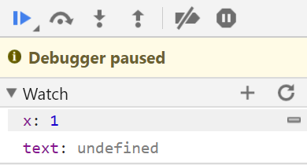

Javascript的调试方法(以Chrome为例)
版权：中国石油大学（华东）可视分析小组
一、浏览器窗口的解释
（一）打开调试窗口
1、点击浏览器标题栏右侧“自定义及控制”——“更多工具”——“开发者工具”
2、或者直接在浏览器界面使用快捷键Ctrl+Shift+I
3、也可以直接按F12开启调试窗口
（二）elements窗口的介绍
1、 Element的检查
打开Element面板，可以查看所有DOM节点，包括CSS和JavaScript。如下图所示，左侧为DOM树，右侧为CSS Styles。
在 Element中，我们将鼠标悬停在某一元素后，左侧web会将其选中元素加深显示，并显示其像素尺寸，。选中的
节点在DOM树中被精确定位（蓝色背景），可以看到
节点的DOM层次（下方红色方框）此时单击选中该元素，在面板右侧，是
节点的CSS样式。

2、 Element的修改与编辑
chrome浏览器中的调试可以直接对HTML代码进行修改，免去了编译器和浏览器之间频繁切换的麻烦。修改Element方法如下：
右键点击需要修改的元素，如下图。
Edit text（编辑文本）：编辑该节点中的文本。也可以在文本处双击进行编辑。
Edit as HTML（编辑HTML）：编辑该节点及其子节点的所有HTML元素（包括节点中的文本）。
Copy as HTML（复制HTML）：复制该节点及其子节点的所有HTML元素（HTML文档）。
Copy XPath（复制XPath路径）：复制该节点的XPath路径，即DOM层次路径。例如，
节点的XPath路径为 /html/body/div/p 。
Hide Element（隐藏节点）：隐藏该节点及其子节点的所有HTML元素使其存在但不可见。
Delete Element（删除节点）：删除该节点及其子节点的所有HTML元素。也可以使用 Backspace 和 Delete 键删除。

（三）console窗口的介绍
console即控制台，它为我们提供了许多方法可以在我们调试时调用。一般情况下我们用来输入信息的方法主要是用到如下四个：
1、console.log 用于输出普通信息
2、console.info 用于输出提示性信息
3、console.error用于输出错误信息
4、console.warn用于输出警示信息
下面我们尝试输出一下常量，如图。
我们用console.log尝试输出一下变量，如图。这里注意，console的输出是在控制台显示的，并不在web中，因此不会影响web的整体展现。
AخA1<script>2 var text='输出文本';3 var number=123456;4 var dict={1:'one',2:'two',3:'three'};5 console.log(text);6 console.log(number);7 console.log(dict);8</script>（四）source窗口的介绍
source窗口主要用于断点调试JS和查看调用的文件。
调试功能我们将在下文中详细讲解，这里我们只简单介绍查看功能，检测我们调用的js等文件是否成功加载。
我们先看一下成功加载d3的示例，如图。我们输入正确的d3网址，编译运行成功，我们可以看到源文件目录里有了d3js。
我们故意给程序一个错误的d3地址，看一下不能成功加载时的现象，如下图。显然源文件目录里没有加载d3js，程序自然无法正常运行，这时控制台也会自己输出错误信息，d3未被定义。
在我们调试时，可以用此方法检查我们调用的js源文件是否成功加载，或者在控制台报错时检查是否未加载源文件。
二、javascript的调试
（一）定位error
Chrome是可以直接在运行HTML代码时在error处暂停运行并准确定位脚本错误。我们借用上面输出的例子来简单示范。
xxxxxxxxxx81<script>2 var text='输出文本';3 //var number=123456;4 //var dict={1:'one',2:'two',3:'three'};5 console.log(text);6 console.log(number);7 console.log(dict);8</script> 我们刻意将后两个变量注释掉，然后 console.log试用输出。毫无疑问，浏览器肯定会抛出error，有经验的同学则知道错误信息是有对象未被定义。
但是我们发现，我们后两个变量都没有定义，浏览器却只抛出了最前面的number未被定义。这是因为我们前面提到的，Chrome在运行脚本是会在error处暂停运行，因此后面的错误语句并不会被执行，但是并不影响前面正常语句的编译，因此text会被输出。
观察控制台显示，我们可以发现抛出error的语句位置，即某文件的脚本某一行。
（二）断点调试
前面我们可以从控制台上准确定位error的位置，除此之外，我们还可以进入Sources窗口来更详细的查看error位置和脚本代码。
如图，error会在整个脚本中标出。我们就利用Sources窗口的断点调试功能来一步一步进行我们熟悉的debug。
我们将脚本代码做如下更改，错误仍停留在变量未被定义，只加入一个for循环以便体现Chrome查看变量的功能。
xxxxxxxxxx141<script>2 var x=0;3 for (var i = 0 ;i<10;i++)4 {5 //console.log(x);6 x++;7 };8 var text='输出文本';9 //var number=123456;10 //var dict={1:'one',2:'two',3:'three'};11 console.log(text);12 console.log(number);//error13 console.log(dict);//上一步出现error暂停，本行不执行14</script> 运行脚本后，Sources窗口显示如图。
我们着重看右侧红色框内部分，蓝色选定区域为调试按钮，六个按钮功能依次如下。
Pause/Resume script execution：暂停/恢复脚本执行（程序执行到下一断点停止）。
Step over next function call：执行到下一步的函数调用（跳到下一行）。
Step into next function call：进入当前函数。
Step out of current function：跳出当前执行函数。
Deactive/Active all breakpoints：关闭/开启所有断点（不会取消）。
Pause on exceptions：异常情况自动断点设置。
而绿色区域表示watch窗口，用来监视和查看变量的变化情况，在断点调试中变量赋值改变是可以直接体现的，无需每次输出到控制台上。与其他语言编译器不同，我们需要点击绿色框内的加号，手动添加需要监视的变量即可。
接下来我们添加断点，仍是点击代码行数即可，添加后标签显示蓝色表示选中。
如下图，我们可以观察到，此时我们的变量都未执行赋值，所以watch窗口中我们添加的两个变量都显示未定义。
下面执行Step over next function call，也就是蓝框内的按钮，让脚本代码逐行运行，可以看到我们的变量会随着代码的执行一步一步赋值。

（三）调试变量
在脚本的调试中，我们需要对一个或多个变量的值或其他性质进行跟踪检查。前文我们介绍了watch窗口的功能，通过添加变量即可直接检查变量的赋值情况（是否被赋值、赋值为多少）。有时我们不单单需要检查变量的值，而是要同时检查变量的数据类型或长度等，这时我们还是需要console.log来将其输出到控制台上。
对于变量数据类型的输出，我们借助typeof方法，测试代码如下图。
xxxxxxxxxx141<script>2 var text='输出文本';3 var number=123456;4 var numstr='123456';5 var dict={1:'one',2:'two',3:'three'};6 var list=[1,2,3,4,5]7 var True=true8 console.log(typeof text);9 console.log(typeof number);10 console.log(typeof numstr);11 console.log(typeof dict);12 console.log(typeof list);13 console.log(typeof True);14 </script> 控制台输出各个变量的数据类型，不难发现js中的数据类型与python中大致类似，但有两点区别。一是不区分整型、浮点数而统称为’number‘类；二是没有字典和列表，而是统称为’object‘类。
接下来我们看一下变量的长度，直接调用变量的length，如下图。
xxxxxxxxxx141<script>2 var text='输出文本';3 var number=123456;4 var numstr='123456';5 var dict={1:'one',2:'two',3:'three'};6 var list=[1,2,3,4,5]7 var True=true8 console.log(text.length);9 console.log(number.length);10 console.log(numstr.length);11 console.log(dict.length);12 console.log(list.length);13 console.log(True.length);14 </script> 我们发现，字符串是有长度的，但是number类和布尔类却没有。但同属于’object‘类的list和dict却不一样，前者有长度后者却无。那我们若想调用number的长度该怎么办？很简单，将其转化为字符串即可。但是若数据为浮点型，切记小数点也会占一位
xxxxxxxxxx21var number=123456;2console.log(number.toString().length); 让我们总结一下Chrome的调试，在其开发者工具里我们可以直接查看元素，控制台的输出和加载的源文件。在出现error时我们可以直接在console里查看错误信息，也可在source里定位脚本错误。
断点调试时，我们可以使用Watch窗口检查变量赋值的变化，可以在Breakpoint窗口快速选择跳转标记的不同断点，并使用不同的按钮分步调试，Event Listener Breakpoints可以选择性的监听某类行为事件,如键盘和鼠标的响应。
同时，console.log可以为我们提供灵活的变量输出，方便检查脚本中变量的各种属性。
联系人：李昕 邮箱：lix@upc.edu.cn